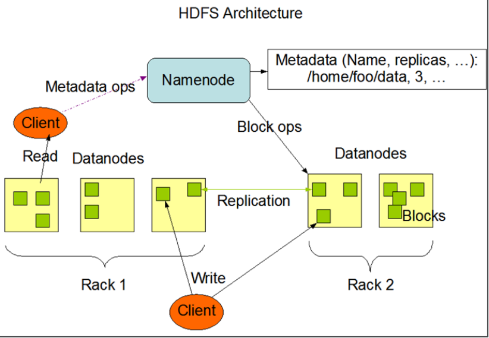

hdfs的使用
任务
1.掌握hdfs的shell常用命令 2.理解hdfs的工作原理
目标
1.hdfs简介 2.hdfs的shell常用命令 3.hdfs的系统组成介绍 4.hdfs的组成部分详解
第一节：HDFS基本概念
1.1 HDFS的介绍
源自于Google的GFS论文 发表于2003年10月 HDFS是GFS克隆版 ，HDFS的全称是Hadoop Distributed File System易于扩展的分布式文件系统，运行在大量普通廉价机器上，提供容错机制，为大量用户提供性能不错的文件存取服务 。
1.2 HDFS设计目标
- 自动快速检测应对硬件错误
- 流式访问数据
- 移动计算比移动数据本身更划算
- 简单一致性模型
- 异构平台可移植
1.3 HDFS的特点
优点：
- 高可靠性：Hadoop按位存储和处理数据的能力值得人们信赖;
- 高扩展性：Hadoop是在可用的计算机集簇间分配数据并完成计算任务的，这些集簇可以方便地扩展到数以千计的节点中。
- 高效性：Hadoop能够在节点之间动态地移动数据，并保证各个节点的动态平衡，因此处理速度非常快。
- 高容错性：Hadoop能够自动保存数据的多个副本，并且能够自动将失败的任务重新分配。
缺点：
- 不适合低延迟数据访问。
- 无法高效存储大量小文件。
- 不支持多用户写入及任意修改文件。
1.4 hdfs核心设计思想及作用
- 分而治之：将大文件、大批量文件，分布式存放在大量服务器上，以便于采取分而治之的方式对海量数据进行运算分析；
- 为各类分布式运算框架（如：mapreduce，spark，tez，……）提供数据存储服务
1.5 hdfs更具体描述
首先，它是一个文件系统，用于存储文件，通过统一的命名空间——目录树来定位文件
其次，它是分布式的，由很多服务器联合起来实现其功能，集群中的服务器有各自的角色；
重要特性如下：
- HDFS中的文件在物理上是分块存储（block），块的大小可以通过配置参数( dfs.blocksize)来规定，默认大小在hadoop2.x版本中是128M，老版本中是64M。
- HDFS文件系统会给客户端提供一个统一的抽象目录树，客户端通过路径来访问文件，形如：hdfs://namenode:port/dir-a/dir-b/dir-c/file.data。
- 目录结构及文件分块信息(元数据)的管理由namenode节点承担——namenode是HDFS集群主节点，负责维护整个hdfs文件系统的目录树，以及每一个路径（文件）所对应的block块信息（block的id，及所在的datanode服务器）。
- 文件的各个block的存储管理由datanode节点承担--- datanode是HDFS集群从节点，每一个block都可以在多个datanode上存储多个副本（副本数量也可以通过参数设置dfs.replication）。
第二节：HDFS的shell
2.1 HDFS shell操作
HDFS提供shell命令行客户端，使用方法如下：

2.2 命令行客户端支持的命令参数
[-appendToFile
[-cat [-ignoreCrc]
[-checksum
[-chgrp [-R] GROUP PATH...]
[-chmod [-R]
[-chown [-R][OWNER][:[GROUP]] PATH...]
[-copyFromLocal [-f][-p]
[-copyToLocal [-p][-ignoreCrc] [-crc]
[-count [-q]
[-cp [-f][-p]
[-createSnapshot
[-deleteSnapshot
[-df [-h][<path> ...]]
[-du [-s][-h]
[-expunge]
[-get [-p][-ignoreCrc] [-crc]
[-getfacl [-R]
[-getmerge [-nl]
[-help [cmd ...]]
[-ls [-d][-h] [-R][<path> ...]]
[-mkdir [-p]
[-moveFromLocal
[-moveToLocal
[-mv
[-put [-f][-p]
[-renameSnapshot
[-rm [-f][-r|-R] [-skipTrash]
[-rmdir [--ignore-fail-on-non-empty]
[-setfacl [-R][{-b|-k} {-m|-x <acl_spec>} <path>]|[--set
[-setrep [-R][-w]
[-stat [format]
[-tail [-f]
[-test -[defsz]
[-text [-ignoreCrc]
[-touchz
[-usage [cmd ...]]
2.3 常用命令参数介绍及命令案例
cat
使用方法：hadoop fs -cat URI [URI …]
将路径指定文件的内容输出到stdout。
示例：
xhadoop fs -cat hdfs://host1:port1/file1 hdfs://host2:port2/file2hadoop fs -cat file:///file3 /user/hadoop/file4返回值：成功返回0，失败返回-1。
chgrp
使用方法：hadoop fs -chgrp [-R] GROUP URI [URI …] Change group association of files. With -R, make the change recursively through the directory structure. The user must be the owner of files, or else a super-user. Additional information is in the Permissions User Guide. -->
改变文件所属的组。使用-R将使改变在目录结构下递归进行。命令的使用者必须是文件的所有者或者超级用户。更多的信息请参见HDFS权限用户指南。
chmod
使用方法：hadoop fs -chmod [-R]
改变文件的权限。使用-R将使改变在目录结构下递归进行。命令的使用者必须是文件的所有者或者超级用户。更多的信息请参见HDFS权限用户指南。
chown
使用方法：hadoop fs -chown [-R][OWNER][:[GROUP]] URI [URI ]
改变文件的拥有者。使用-R将使改变在目录结构下递归进行。命令的使用者必须是超级用户。更多的信息请参见HDFS权限用户指南。
Put
get
copyFromLocal put
使用方法：hadoop fs -copyFromLocal
URI 除了限定源路径是一个本地文件外，和put命令相似。
copyToLocal get
使用方法：hadoop fs -copyToLocal [-ignorecrc][-crc] URI
除了限定目标路径是一个本地文件外，和get命令类似。
cp
使用方法：hadoop fs -cp URI [URI …]
将文件从源路径复制到目标路径。这个命令允许有多个源路径，此时目标路径必须是一个目录。
示例：
xxxxxxxxxxhadoop fs -cp /user/hadoop/file1 /user/hadoop/file2hadoop fs -cp /user/hadoop/file1 /user/hadoop/file2 /user/hadoop/dir返回值：成功返回0，失败返回-1。
du
使用方法：hadoop fs -du URI [URI …]
显示目录中所有文件的大小，或者当只指定一个文件时，显示此文件的大小。
示例：
xxxxxxxxxxhadoop fs -du /user/hadoop/dir1 /user/hadoop/file1 hdfs://host:port/user/hadoop/dir1返回值：成功返回0，失败返回-1。
dus
使用方法：hadoop fs -dus
显示文件的大小。
expunge
使用方法：hadoop fs -expunge
清空回收站。请参考HDFS设计文档以获取更多关于回收站特性的信息。默认关闭
get
使用方法：hadoop fs -get [-ignorecrc][-crc]
复制文件到本地文件系统。可用-ignorecrc选项复制CRC校验失败的文件。使用-crc选项复制文件以及CRC信息。
示例：
xxxxxxxxxxhadoop fs -get /user/hadoop/file localfilehadoop fs -get hdfs://host:port/user/hadoop/file localfile返回值：成功返回0，失败返回-1。
getmerge
使用方法：hadoop fs -getmerge
[addnl] 接受一个源目录和一个目标文件作为输入，并且将源目录中所有的文件连接成本地目标文件。addnl是可选的，用于指定在每个文件结尾添加一个换行符。
ls
使用方法：hadoop fs -ls
如果是文件，则按照如下格式返回文件信息：
文件名 <副本数> 文件大小 修改日期 修改时间 权限 用户ID 组ID
如果是目录，则返回它直接子文件的一个列表，就像在Unix中一样。目录返回列表的信息如下：
目录名
修改日期 修改时间 权限 用户ID 组ID 示例：
xxxxxxxxxxhadoop fs -ls /user/hadoop/file1 /user/hadoop/file2 hdfs://host:port/user/hadoop/dir1 /nonexistentfile返回值：成功返回0，失败返回-1。
lsr
使用方法：hadoop fs -lsr
ls命令的递归版本。类似于Unix中的ls -R。
mkdir
使用方法：hadoop fs -mkdir
接受路径指定的uri作为参数，创建这些目录。其行为类似于Unix的mkdir -p，它会创建路径中的各级父目录。
示例：
xxxxxxxxxxhadoop fs -mkdir /user/hadoop/dir1 /user/hadoop/dir2hadoop fs -mkdir hdfs://host1:port1/user/hadoop/dir hdfs://host2:port2/user/hadoop/dir返回值：成功返回0，失败返回-1。
movefromLocal
使用方法：dfs -moveFromLocal
输出一个”not implemented“信息。
mv
使用方法：hadoop fs -mv URI [URI …]
将文件从源路径移动到目标路径。这个命令允许有多个源路径，此时目标路径必须是一个目录。不允许在不同的文件系统间移动文件。
示例：
xxxxxxxxxxhadoop fs -mv /user/hadoop/file1 /user/hadoop/file2hadoop fs -mv hdfs://host:port/file1 hdfs://host:port/file2 hdfs://host:port/file3 hdfs://host:port/dir1 (多集群环境—不常用)返回值：成功返回0，失败返回-1。
put
使用方法：hadoop fs -put
... 从本地文件系统中复制单个或多个源路径到目标文件系统。也支持从标准输入中读取输入写入目标文件系统。
xxxxxxxxxxhadoop fs -put localfile /user/hadoop/hadoopfilehadoop fs -put localfile1 localfile2 /user/hadoop/hadoopdirhadoop fs -put localfile hdfs://host:port/hadoop/hadoopfilehadoop fs -put - hdfs://host:port/hadoop/hadoopfile从标准输入中读取输入。返回值：成功返回0，失败返回-1。
rm
使用方法：hadoop fs -rm URI [URI …]
删除指定的文件。只删除非空目录和文件。请参考rmr命令了解递归删除。
示例：
xxxxxxxxxxhadoop fs -rm hdfs://host:port/file /user/hadoop/emptydir返回值：成功返回0，失败返回-1。
rmr
使用方法：hadoop fs -rmr URI [URI …]
delete的递归版本。
示例：
xxxxxxxxxxhadoop fs -rmr /user/hadoop/dirhadoop fs -rmr hdfs://host:port/user/hadoop/dir返回值：成功返回0，失败返回-1。
setrep
使用方法：hadoop fs -setrep [-R]
改变一个文件的副本系数。-R选项用于递归改变目录下所有文件的副本系数。
示例：
xxxxxxxxxxhadoop fs -setrep -w 3 -R /user/hadoop/dir1返回值：成功返回0，失败返回-1。
stat
使用方法：hadoop fs -stat URI [URI …]
返回指定路径的统计信息。
示例：
xxxxxxxxxxhadoop fs -stat path返回值：成功返回0，失败返回-1。
tail
使用方法：hadoop fs -tail [-f] URI
将文件尾部1K字节的内容输出到stdout。支持-f选项，行为和Unix中一致。
示例：
xxxxxxxxxxhadoop fs -tail pathname返回值：成功返回0，失败返回-1。
test
使用方法：hadoop fs -test -[ezd] URI
选项：
-e 检查文件是否存在。如果存在则返回0。
-z 检查文件是否是0字节。如果是则返回0。
-d 如果路径是个目录，则返回1，否则返回0。
示例：
xxxxxxxxxxhadoop fs -test -e filename
cat
text
使用方法：hadoop fs -text
将源文件输出为文本格式。允许的格式是zip和TextRecordInputStream。
touchz
使用方法：hadoop fs -touchz URI [URI …]
创建一个0字节的空文件。
示例：
xxxxxxxxxxhadoop -touchz pathname返回值：成功返回0，失败返回-1。distcp
利用distcp在hdfs间传送数据
示例：
xxxxxxxxxx$ hadoop distcp -overwrite hdfs://192.168.2.31:9000/tmp/pageview.log hdfs://hadoop01:9000/tmp/pageview.log
Hadoop回收站trash
Hadoop回收站trash，默认是关闭的。 习惯了window的同学，建议最好还是把它提前开开，否则误操作的时候，就欲哭无泪了
修改conf/core-site.xml,增加复制代码
xxxxxxxxxx<property><name>fs.trash.interval</name><value>1440</value><description>Number of minutes between trash checkpoints. If zero, the trash feature is disabled.</description></property>默认是0.单位分钟。这里我设置的是1天（60*24）
删除数据rm后，会将数据move到当前文件夹下的.Trash目录
测试
新建目录input
xxxxxxxxxxhadoop/bin/hadoop fs -mkdir input上传文件
xxxxxxxxxxhadoop/bin/hadoop fs -copyFromLocal /data/soft/file0* input删除目录input
xxxxxxxxxxhadoop fs -rmr inputMoved to trash: hdfs://master:9000/user/root/input
参看当前目录
xxxxxxxxxxhadoop fs -lsFound 2 itemsdrwxr-xr-x - root supergroup 0 2011-02-12 22:17 /user/root/.Trash发现input删除，多了一个目录.Trash
恢复刚刚删除的目录
xxxxxxxxxxhadoop fs -mv /user/root/.Trash/Current/user/root/input /user/root/input检查恢复的数据
xxxxxxxxxxhadoop fs -ls inputFound 2 items-rw-r--r-- 3 root supergroup 22 2011-02-12 17:40 /user/root/input/file01-rw-r--r-- 3 root supergroup 28 2011-02-12 17:40 /user/root/input/file02删除.Trash目录（清理垃圾）
xxxxxxxxxxhadoop fs -rmr .TrashDeleted hdfs://master:9000/user/root/.Trash
第三节 HDFS详解
3.1 HDFS概述

- HDFS集群分为两大角色：NameNode、DataNode
- 集群中主机分别放置在不同的机架中
- NameNode负责管理整个文件系统的元数据
- DataNode 负责管理用户的文件数据块
- 文件会按照固定的大小（blocksize）切成若干块后分布式存储在若干台datanode上
- 每一个文件块可以有多个副本，并存放在不同的datanode上
- Datanode会定期向Namenode汇报自身所保存的文件block信息，而namenode则会负责保持文件的副本数量
- HDFS的内部工作机制对客户端保持透明，客户端请求访问HDFS都是通过向namenode申请来进行
3.2 数据存储位置与复制详解

- 同一节点上的存储数据
- 同一机架上不同节点上的存储数据
- 同一数据中心不同机架上的存储数据
- 不同数据中心的节点
HDFS 数据存放策略就是采用同节点与同机架并行的存储方式。在运行客户端的当前节点上存放第一个副本，第二个副本存放在于第一个副本不同的机架上的节点，第三个副本放置的位置与第二个副本在同一个机架上而非同一个节点。
3.3 读取过程分析

客户端或者用户通过调用 FileSystem 对象的 open()方法打开需要读取的文件，这对 HDFS 来说是常见一个分布式文件系统的一个读取实例。
FileSystem 通过远程协议调用 NameNode 确定文件的前几个 Block 的位置。对于每一个 Block， NameNode 返回一含有那个 Block 拷贝的“元数据”，即文件基本信息；接下来，DataNode 按照上文定义的距离值进行排序，如果 Client 本身就是一个 DataNode，那么优先从本地 DataNode 节点读取数据。 HDFS 实例做完以上工作后，返回一个 FSDataInputStream给客户端，让其从 FSDataInputStream 中读取数据。 FSDataInputStream 接着包装一个DFSInputStream，用来管理 DataNode 和 NameNode 的 I/O。
NameNode 向客户端返回一个包含数据信息的地址，客户端根据地址创建一个FSDataInputStream 开始对数据进行读取。
FSDataInputStream 根据开始时存放的前几个 Blocks 的 DataNode 的地址，连接到最近的 DataNode 上对数据开始从头读取。客户端反复调用 read（）方法，以流式方式从DataNode 读取数据。
当读到 Block 的结尾的时候， FSDataInputStream 会关闭到当前 DataNode 的链接，然后查找能够读取下一个 Block 的最好的 DataNode。这些操作对客户端是透明的，客户端感觉到的是连续的流，也就说读取的时候就开始查找下一个块所在的地址。
- 读取完成调用 close()方法，关闭 FSDataInputStream。
以上就是 HDFS 对数据进行读取的整个流程。
3.4 写入过程分析

- Client 通过调用 FileSystem 的 create()方法来请求创建文件
- FileSystem 通过对 NameNode 发出远程请求，在 NameNode 里面创建一个新的文件，但此时并不关联任何的块。 NameNode 进行很多检查来保证不存在要创建的文件已经存在于文件系统中，同时检查是否有相应的权限来创建文件。如果这些检查都完成了，那么NameNode 将记录下来这个新文件的信息。 FileSystem 返回一个 FSDataOutputStream 给客户端用来写入数据。和读的情形一样， FSDataOutputStream 将包装一个 DFSOutputStream 用于和 DataNode 及 NameNode 通信。而一旦文件创建失败，客户端会收到一个 IOExpection，标示文件创建失败，停止后续任务。
- 客户端开始写数据。 FSDataOutputStream 把要写入的数据分成包的形式，将其写入到中间队列中。其中的数据由 DataStreamer 来读取。 DataStreamer 的职责是让 NameNode分配新的块——通过找出合适的 DataNode——来存储作为备份而复制的数据。这些DataNode 组成一个流水线，我们假设这个流水线是个三级流水线，那么里面将含有三个节点。此时， DataStreamer 将数据首先写入到流水线中的第一个节点。此后由第一个节点将数据包传送并写入到第二个节点，然后第二个将数据包传送并写入到第三个节点。
- FSDataOutputStream 维护了一个内部关于 packets 的队列，里面存放等待被DataNode 确认无误的 packets 的信息。这个队列称为等待队列。一个 packet 的信息被移出本队列当且仅当 packet 被流水线中的所有节点都确认无误
- 当完成数据写入之后客户端调用流的 close 方法，在通知 NameNode 完成写入之前，这个方法将 flush 残留的 packets，并等待确认信息（ acknowledgement）。 NameNode 已经知道文件由哪些块组成(通过 DataStream 询问数据块的分配)，所以它在返回成功前只需要等待数据块进行最小值复制。
3.5 文件访问权限
- 只读权限 -r ：最基本的文件权限设置，应用于所有可进入系统的用户，任意一个用户读取文件或列出目录内容时只需要只读权限。
- 写入权限 -w ：用户使用命令行或者 API 接口对文件或文件目录进行生成以及删除等操作的时候需要写入权限。
- 读写权限 -rw ：同时具备上述两种权限功能的一种更加高级的权限设置。
- 执行权限 -x ：一种特殊的文件设置， HDFS 目前没有可执行文件，因此一般不对此进行设置，但是可将此权限用于对某个目录的权限设置以对用户群加以区分。
3.6 Hadoop 静态和动态增加删除节点
静态添加，关闭hadoop集群，配置相应配置，重启集群
修改slave文件 重启hadoop集群
优点：改动少
缺点：暴力 需要停止服务
应用环境：晚上或凌晨做 不耽误使用
检查：50070和8088 端口检查
动态添加，在不重启集群的情况下添加节点
设置新节点与NN和RM的SSH无密码登陆
在hosts添加主机名称，并且把该文件复制到集群中的其他节点上
修改主节点上的slaves文件（主要用于下次重启的时候使用）
在新节点中启动进程:可以单独起 就不需要一起起服务了
xxxxxxxxxxsbin/hadoop-daemon.sh start datanodesbin/yarn-daemon.sh start nodemanager
优点：非暴力 不需要停止服务
缺点：改动多 如果一次上很多 会乱
应用环境：随时不耽误使用
检查：50070和8088 端口检查